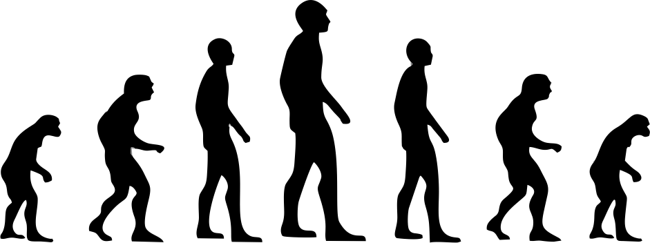
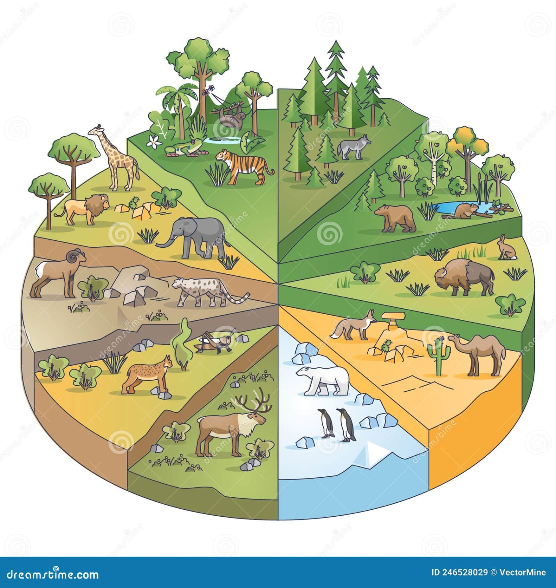
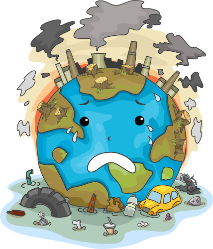
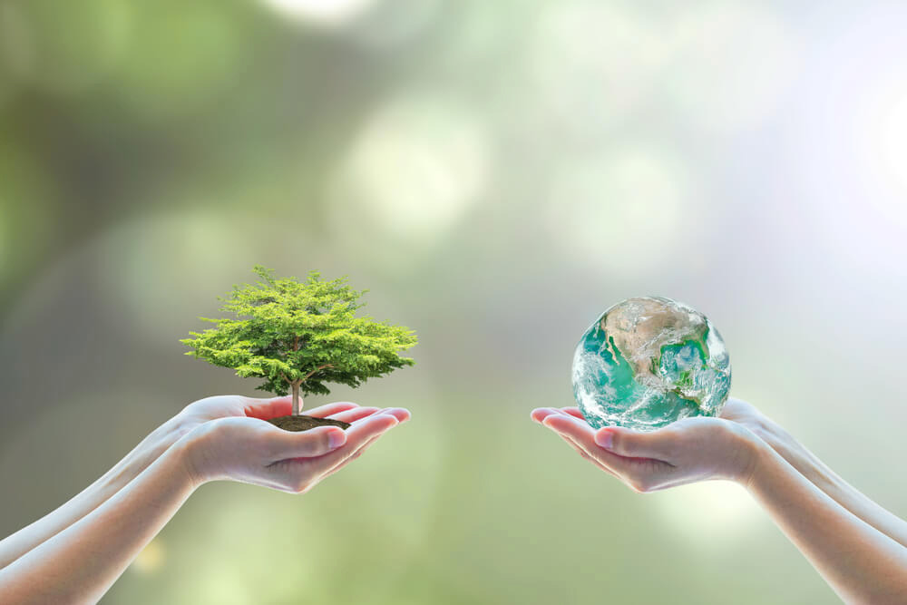

Nossa missão é inspirar as pessoas a entenderem e valorizarem a vida terrestre em toda a sua riqueza e complexidade. Acreditamos que a educação é a chave para a preservação do nosso planeta e estamos comprometidos em fornecer conteúdo de alta qualidade para todos os públicos.
Visão:Almejamos ser uma referência online para entusiastas da natureza, educadores, estudantes e todos aqueles que se interessam pelo meio ambiente. Nosso desejo é criar uma comunidade engajada em proteger e preservar o mundo natural para as futuras gerações.
Artigos detalhados sobre diversas espécies, ecossistemas, e temas relacionados à vida terrestre.
Recursos Educativos:Materiais didáticos e recursos interativos para professores e estudantes.
Notícias e Atualizações:Informações sobre as últimas descobertas científicas, projetos de conservação e questões ambientais.
Guias de Ação:Dicas práticas e orientações sobre como você pode contribuir para a preservação da biodiversidade e o meio ambiente.
A vida terrestre refere-se a todas as formas de vida que existem no planeta Terra, incluindo plantas, animais, fungos, bactérias e outros organismos. Esses seres vivos estão adaptados a uma vasta gama de ambientes, desde as profundezas dos oceanos até os picos das montanhas, passando por desertos áridos e florestas tropicais densas.
A Terra é o lar de milhões de espécies, cada uma desempenhando um papel único no ecossistema. A biodiversidade é vital para a saúde dos ecossistemas, fornecendo serviços essenciais, como a polinização de plantas, a decomposição de matéria orgânica e o controle de pragas. A conservação da biodiversidade é crucial para a sobrevivência a longo prazo do planeta.
A vida na Terra evoluiu ao longo de bilhões de anos, desde as formas de vida unicelulares mais simples até os complexos organismos multicelulares que vemos hoje. A teoria da evolução, proposta por Charles Darwin, explica como as espécies mudam e se adaptam ao longo do tempo em resposta a pressões ambientais.
Os diferentes habitats terrestres, como florestas, savanas, desertos e tundras, abrigam uma grande diversidade de vida. Cada ecossistema é uma comunidade de organismos que interagem entre si e com o ambiente físico. A destruição de habitats e a alteração dos ecossistemas podem levar à perda de biodiversidade e à degradação ambiental.
As atividades humanas têm um impacto significativo na vida terrestre. A destruição de habitats, a poluição, a mudança climática e a exploração excessiva de recursos naturais estão colocando muitas espécies em risco de extinção. É essencial adotar práticas sustentáveis para proteger e preservar a vida na Terra.
A conservação da vida terrestre envolve esforços para proteger espécies ameaçadas, restaurar habitats degradados e promover o uso sustentável dos recursos naturais. Projetos de conservação, reservas naturais e políticas ambientais são fundamentais para garantir que as futuras gerações possam desfrutar da rica biodiversidade do planeta.
Estima-se que existem milhões de espécies ainda desconhecidas pela ciência.
O maior organismo da Terra é um fungo chamado Armillaria ostoyae, que cobre mais de 9 km² em uma floresta no Oregon, EUA.
Alguns organismos, como os tardígrados, são capazes de sobreviver em condições extremas, como temperaturas abaixo de zero ou radiação intensa.
Cada pessoa pode contribuir para a proteção da vida terrestre adotando práticas sustentáveis como reciclagem,
redução do consumo de plástico, apoio a iniciativas de conservação e conscientização sobre a importância da biodiversidade.
Pequenas ações individuais podem ter um grande impacto cumulativo na preservação do meio ambiente.